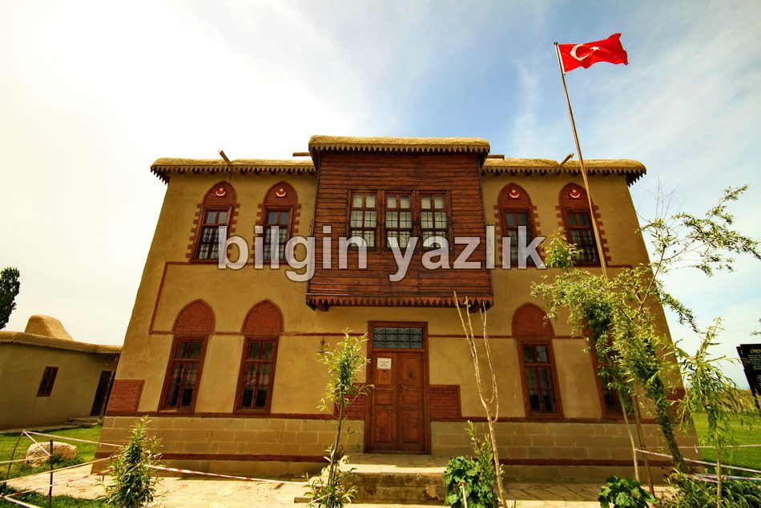
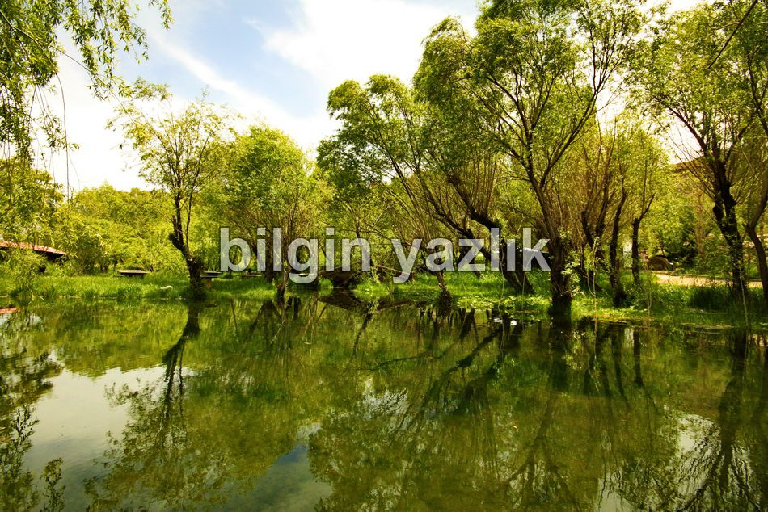
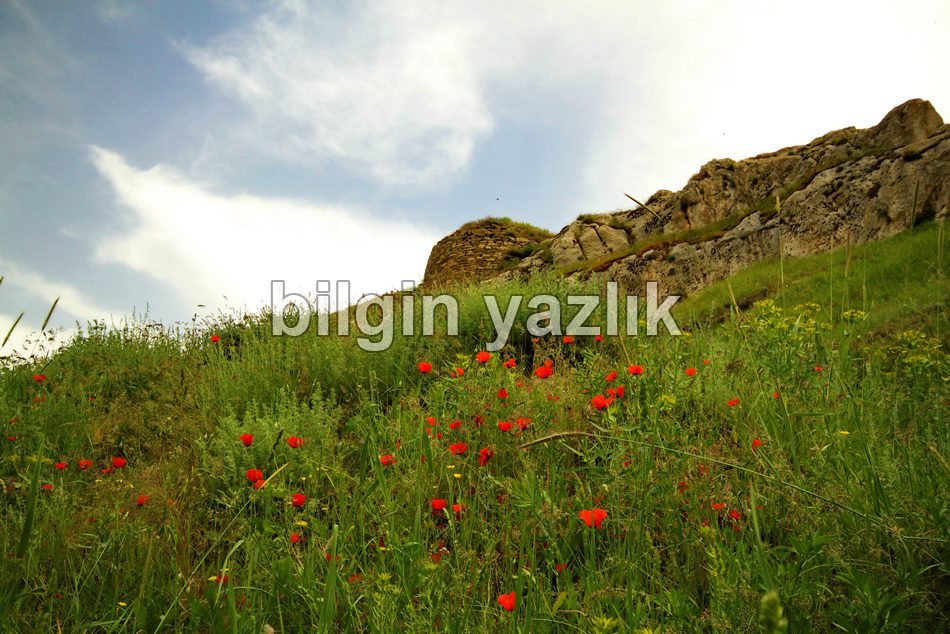
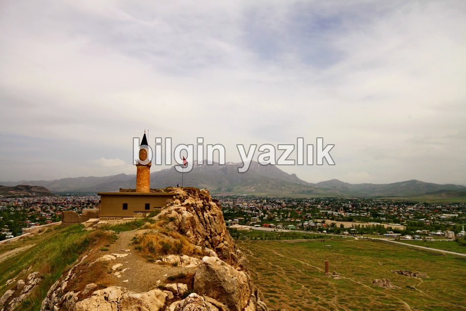
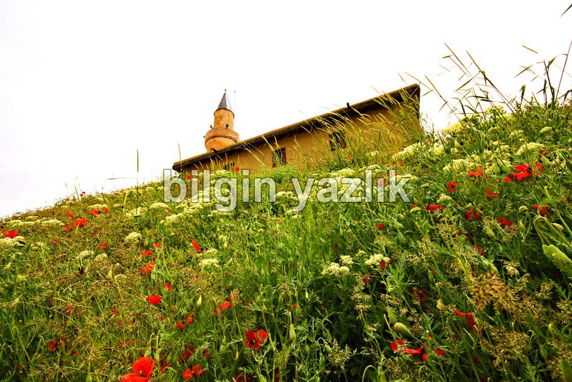
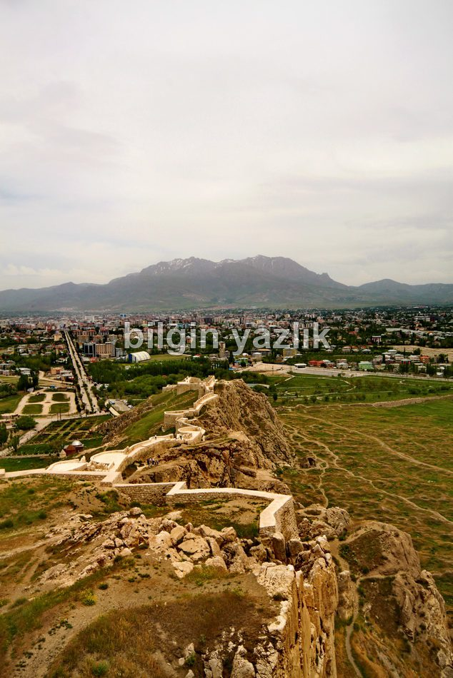
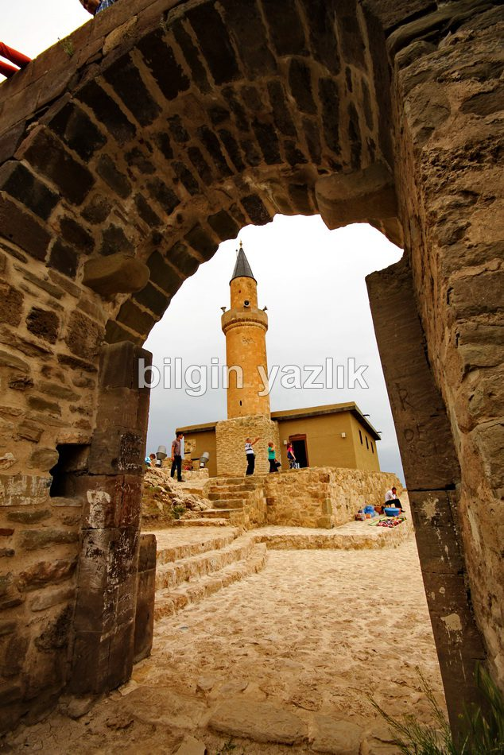
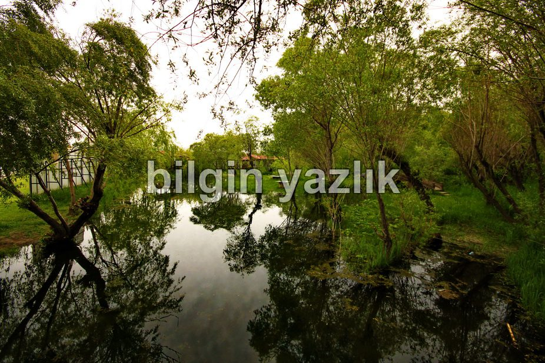

Van Kalesi
Van Kalesi’nin Urartu kalesi olduğunu bilmeyeniniz yoktur. Urartulardan sonra hangi millet Van’a hakim olmuşsa bu kaleyi hep kullanmışlardır. Cumhuriyet dönemi ile birlikte kale turistik bir esere dönüşmüştür. Kalenin çevresi su kaynakları ile doludur, içinden bile Hor Hor adı verilen su çıkar. İçerdiği mağaralar ve içinden gelen şelalemsi su sesi nedeniyle çok sayıda efsanevi hikayeye de konu mankenliği yapar Van Kalesi. Evliya Çelebi seyahatnamesinde Van Kalesinde uzun uzadıya bahseder. Şu sıralarda restorasyon çalışmaları var, kale Osmanlı dönemindeki haline dönüştürülüyor. Kalenin zirvesinde restore edilmiş, ibadete açık bir de cami bulunuyor. Kalenin eteklerinde çok sayıda cami restorasyonu da devam ediyor, kale girişinde ise güzel bir eski van evi yer alıyor. Anlatmakla bitmeyecek güzellikteki bu kaleye uğramakta büyük fayda var.








Bu yazı taliyol arşivinden taşınmıştır. · özgün kayıt